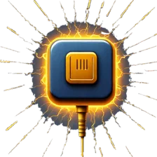
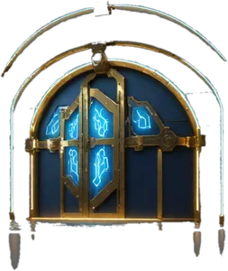

войди, чтобы прогресс сохранялся отдельно для тебя
Это прототип без сервера: профили лежат в самом браузере,
на этом компьютере. Пароль здесь не защита, а разделитель — чтобы вы с другом
играли в одном файле, но каждый в своём городе. Настоящие пароли сюда не вводи.
С ЧЕГО НАЧАТЬ
Клик по кварталу «ТВОЙ ГАРАЖ» — там добыча.
В гараже: Продуть от пыли, Собрать добычу, Мастерская — склад и защита.
Кнопка «Банда» вверху — создать свою, собрать герб, ставить флаги.
«Большая карта» — соседние районы, разведка и марши.
квартал
—
контроль—
майнит людей—
хешрейт квартала—
электричество—
риск налёта—
несобранное—
🏆 АРЕНА · СЕЗОН 1
до конца сезона —
—

хешрейт
—доход/сутки
—свет/сутки
—пыль
—несобранное
—под защитой
—

щит
—⚠ состояние
—сложность сети
—хешрейт всех игроков
—твоя доля сети
—PoW-награда/сутки
—намайнено из 21 млн
💬 LIVE CHAT
Messages stay visible while you play.
Be respectful. Flooding is limited by the server.
район
—
контроль—
несобранное—
расстояние—
бонус района—
пассивный доход—
путь банды—
колесо — масштаб · зажать — двигать карту
GitHub · гостевая версия · аккаунты и мультиплеер требуют сервера